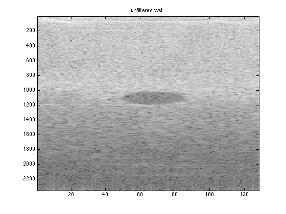
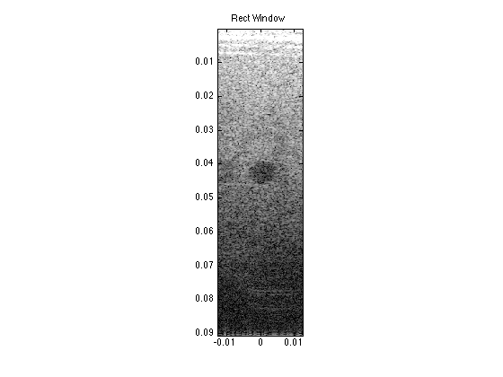

Contents
anecoicCyst_data=anecoicCyst.data(80:end,:,:);
time=[0:1:size(anecoicCyst_data,1)-1]*(1/((anecoicCyst.samplingRateMHz)*(10^6)));
timeArray=[0:1/(anecoicCyst.samplingRateMHz*(10^6)):(size(anecoicCyst_data,1)-1)/(anecoicCyst.samplingRateMHz*(10^6))]';
timeArray2=repmat(timeArray,[1,128]);
for zz=1:length(anecoicCyst_data)
zf(zz,1)=(time(zz)*1540)/2;
end
for yy=1:length(zf)
for bb=-63.5:1:63.5
xe_cont(yy,bb+64.5)=((anecoicCyst.elementSpacingMM)/1000)*bb;
diag_dist_cont(yy,bb+64.5)=sqrt(zf(yy)^2 + (xe_cont(yy,bb+64.5))^2);
time_diag_cont(yy,bb+64.5)=diag_dist_cont(yy,bb+64.5)/1540;
end
for bb=-63.5:1:63.5
time_delay_cont(yy,bb+64.5)=time_diag_cont(yy,bb+64.5)-time_diag_cont(yy,65);
end
end
for dd=1:length(timeArray)
time_withDelays_cont(dd,:)=timeArray2(dd,:)+time_delay_cont(dd,:);
end
for hh=1:128
temp_cont=interp1(timeArray2(:,hh),squeeze(anecoicCyst_data(:,hh,:)),time_withDelays_cont(:,hh),'linear',0);
reshaped_interp_cont(:,hh,:)=reshape(temp_cont,[2353,1,128]);
end
for jj=1:128
for kk=1:2353
zone_interp_cont(kk,jj)=sum(reshaped_interp_cont(kk,:,jj));
end
end
figure; imagesc(20*log10(abs(hilbert(zone_interp_cont))))
colormap('gray')
title('unfiltered cyst')

Question 2) Apodization matrices
lat_array=xe_cont(1,:);
for vv=1:2353
axial_array(vv)=(vv/(2*(anecoicCyst.samplingRateMHz*(10^6))))*1540;
end
rect_window=reshape(rectwin(128),[1,128]);
apod_mat_rect=repmat(rect_window, [2353,1,128]);
apodization_rect=anecoicCyst_data.*apod_mat_rect;
for jj=1:128
for kk=1:2353
sum_apod_rect(kk,jj)=sum(apodization_rect(kk,:,jj));
end
end
figure; imagesc(lat_array,axial_array,20*log10(abs(hilbert(sum_apod_rect))),[30,80])
title('Rect Window')
colormap('gray')
axis image
maskLesion = roipoly;
maskLesion_bg = roipoly;
sum_mask=sum(sum(maskLesion));
sum_mask_bg=sum(sum(maskLesion_bg));
rect=maskLesion.*abs(hilbert(sum_apod_rect));
rect_bg=maskLesion_bg.*abs(hilbert(sum_apod_rect));
sum_rect=sum(sum(rect));
sum_rect_bg=sum(sum(rect_bg));
mean_rect=sum_rect/sum_mask;
mean_rect_bg=sum_rect_bg/sum_mask_bg;
contrast_rect=-20*log10(mean_rect/mean_rect_bg)
rect_sq=rect.^2;
rect_bg_sq=rect_bg.^2;
sum_rect_sq=sum(sum(rect_sq));
sum_rect_bg_sq=sum(sum(rect_bg_sq));
mean_rect_sq=sum_rect_sq/sum_mask;
mean_rect_bg_sq=sum_rect_bg_sq/sum_mask_bg;
var_rect=mean_rect_sq-(mean_rect).^2;
var_rect_bg=mean_rect_bg_sq-(mean_rect_bg).^2;
CNR_rect=abs(mean_rect_bg-mean_rect)/sqrt(var_rect_bg+var_rect)
tri_window=reshape(triang(128),[1,128]);
apod_mat_tri=repmat(tri_window, [2353,1,128]) ;
apodization_tri=anecoicCyst_data.*apod_mat_tri;
for jj=1:128
for kk=1:2353
sum_apod_tri(kk,jj)=sum(apodization_tri(kk,:,jj));
end
end
figure; imagesc(lat_array,axial_array,20*log10(abs(hilbert(sum_apod_tri))),[30,80])
title('Triangle Window')
colormap('gray')
axis image
tri=maskLesion.*abs(hilbert(sum_apod_tri));
tri_bg=maskLesion_bg.*abs(hilbert(sum_apod_tri));
sum_tri=sum(sum(tri));
sum_tri_bg=sum(sum(tri_bg));
mean_tri=sum_tri/sum_mask;
mean_tri_bg=sum_tri_bg/sum_mask_bg;
contrast_tri=-20*log10(mean_tri/mean_tri_bg)
tri_sq=tri.^2;
tri_bg_sq=tri_bg.^2;
sum_tri_sq=sum(sum(tri_sq));
sum_tri_bg_sq=sum(sum(tri_bg_sq));
mean_tri_sq=sum_tri_sq/sum_mask;
mean_tri_bg_sq=sum_tri_bg_sq/sum_mask_bg;
var_tri=mean_tri_sq-(mean_tri).^2;
var_tri_bg=mean_tri_bg_sq-(mean_tri_bg).^2;
CNR_tri=abs(mean_tri_bg-mean_tri)/sqrt(var_tri_bg+var_tri)
hann_window=reshape(hann(128),[1,128]);
apod_mat_hann=repmat(hann_window, [2353,1,128]);
apodization_hann=anecoicCyst_data.*apod_mat_hann;
for jj=1:128
for kk=1:2353
sum_apod_hann(kk,jj)=sum(apodization_hann(kk,:,jj));
end
end
figure; imagesc(lat_array,axial_array,20*log10(abs(hilbert(sum_apod_hann))),[30,80])
title('Hann Window')
colormap('gray')
axis image
hann_win=maskLesion.*abs(hilbert(sum_apod_hann));
hann_bg=maskLesion_bg.*abs(hilbert(sum_apod_hann));
sum_hann=sum(sum(hann_win));
sum_hann_bg=sum(sum(hann_bg));
mean_hann=sum_hann/sum_mask;
mean_hann_bg=sum_hann_bg/sum_mask_bg;
contrast_hann=-20*log10(mean_hann/mean_hann_bg)
hann_sq=hann_win.^2;
hann_bg_sq=hann_bg.^2;
sum_hann_sq=sum(sum(hann_sq));
sum_hann_bg_sq=sum(sum(hann_bg_sq));
mean_hann_sq=sum_hann_sq/sum_mask;
mean_hann_bg_sq=sum_hann_bg_sq/sum_mask_bg;
var_hann=mean_hann_sq-(mean_hann).^2;
var_hann_bg=mean_hann_bg_sq-(mean_hann_bg).^2;
CNR_hann=abs(mean_hann_bg-mean_hann)/sqrt(var_hann_bg+var_hann)
contrast_rect =
7.8466
CNR_rect =
0.9349
contrast_tri =
9.9695
CNR_tri =
1.0800
contrast_hann =
10.0158
CNR_hann =
1.0869
